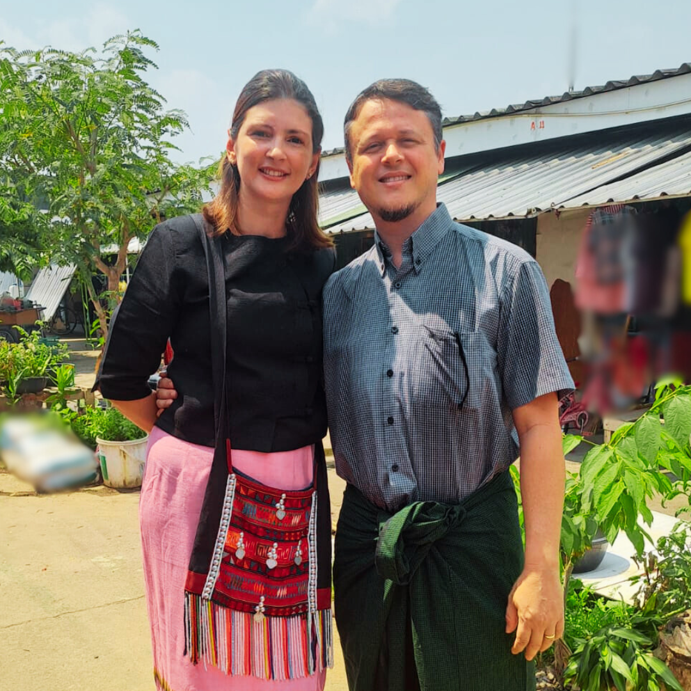
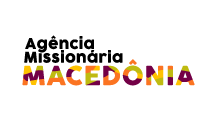
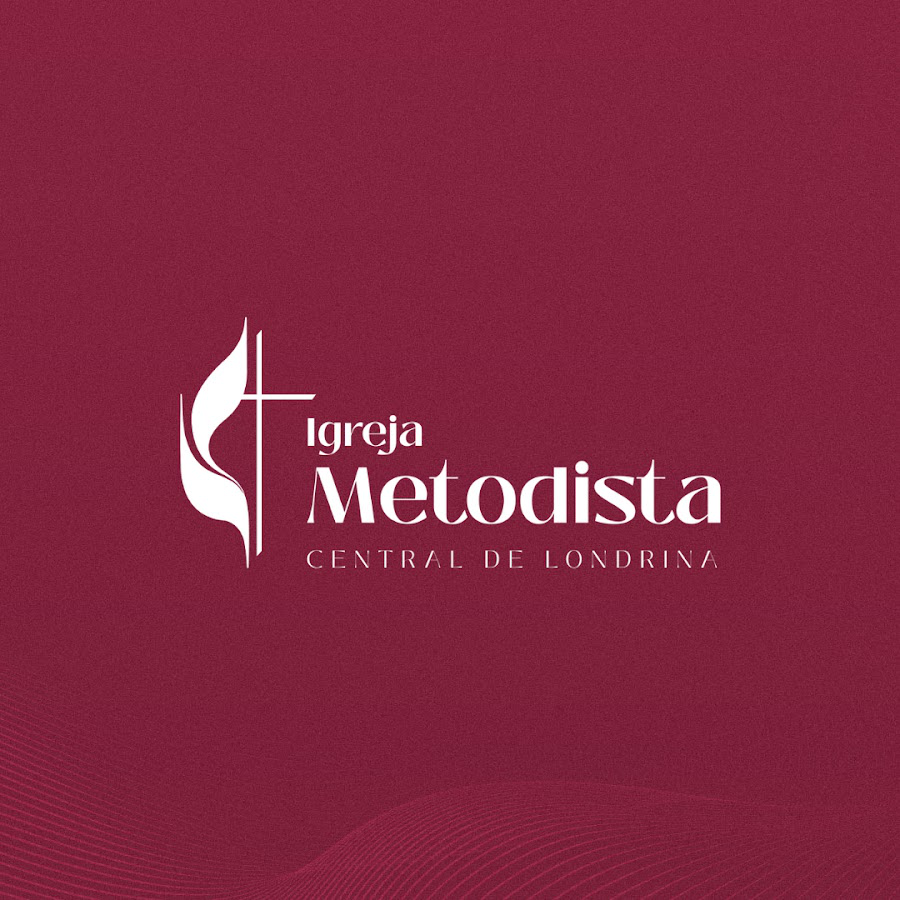
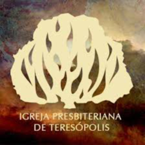

PT
PT
 EN
EN
Conhecendo GoSalim
GoSalim cruzou nosso caminho em um dia comum. Ao ajudá-lo, descobrimos uma comunidade de refugiados birmaneses e vimos a provisão de Deus abrir portas inesperadas.
Apadrinhe uma bolsa escolar pelo Sementes de Sabedoria ou torne-se parceiro mantenedor para sustentar educação, cuidado social, igrejas, obreiros e famílias no campo missionário.

A Missão Hannah nasceu do chamado de servir a Deus de forma prática: ensinando, cuidando, alimentando, acolhendo e caminhando com pessoas em contextos de vulnerabilidade.
Nosso trabalho conecta fé e ação por meio de projetos educacionais, sociais e missionários que fortalecem crianças, famílias, líderes locais e comunidades inteiras.
Demonstrar o amor de Deus por meio de educação, cuidado integral e serviço missionário.
Ver crianças e comunidades transformadas, fortalecidas e alcançadas pelo Reino de Deus.
Fé, compaixão, excelência, transparência, discipulado e compromisso com os vulneráveis.
Cada projeto responde a uma necessidade real: educação, acolhimento, alimento, saúde, discipulado, renda e formação de crianças e comunidades.
O apadrinhamento é uma campanha específica do projeto Sementes de Sabedoria. Já os parceiros mantenedores ajudam a sustentar as demais frentes da Missão Hannah conforme as necessidades mais urgentes do campo.
Apoie o projeto Sementes de Sabedoria e ajude uma criança refugiada a estudar em uma escola tailandesa.
Como mantenedor individual, igreja ou instituição parceira, você ajuda a sustentar o HIS Learning Center, alimentação, abrigo, saúde, gestantes, igrejas, obreiros e ações sociais.
GoSalim cruzou nosso caminho em um dia comum. Ao ajudá-lo, descobrimos uma comunidade de refugiados birmaneses e vimos a provisão de Deus abrir portas inesperadas.
Em meio ao desespero, uma oração simples encontrou resposta. Chegamos com mantimentos no momento certo e testemunhamos Deus conduzindo a missão.
“Nunca imaginei que uma refeição e uma palavra de amor pudessem transformar tanto uma vida. Sou grata por tudo que recebi.”
“Servir aqui me ensinou que a verdadeira riqueza está em amar o próximo de forma prática.”



